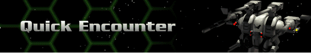
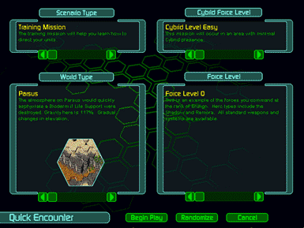

Here you will select options in four categories to quickly develop everything you need to carry out a mission: Scenario Type (what kind of mission), World Type (which planet or moon), Force Level (your forces), and Cybrid Force Level (enemy forces). Use the scroll bars below each category window to make your selections.
You can experiment by pitting a well-equipped, large Herc fleet against a minimal Cybrid attack. Or truly test your skills by intentionally outnumbering your Hercs with overwhelming Cybrid forces. For the quickest encounter, use the Randomize key.
